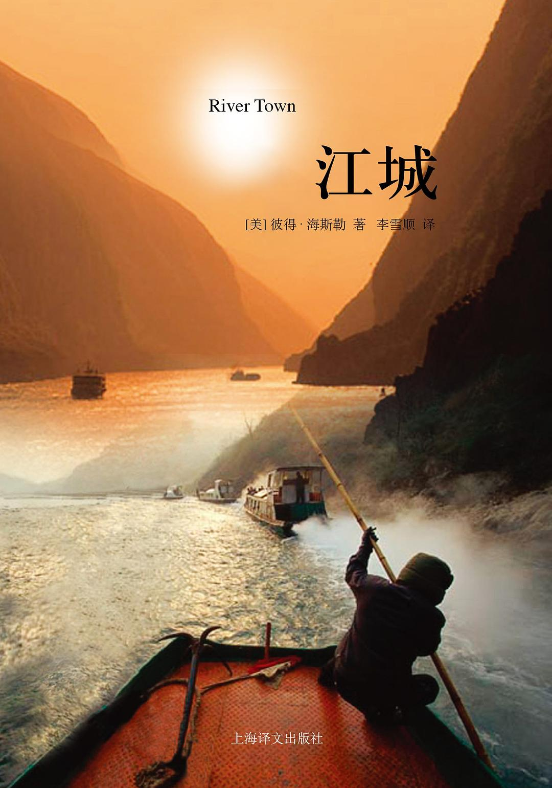

《江城》

总体观点
美国非虚构作家何伟（彼得·海斯勒）以和平队志愿者身份深入四川涪陵师专支教两年的纪实之作《江城》，是西方世界观察当代中国社会转型最温情且深刻的人文读本。
核心命题：在时代巨浪（三峡大坝开工、市场经济野蛮生长、意识形态变迁）的剧烈冲刷下，真实中国并不存在于高亢的官方口号或西方的刻板想象中，而深藏在偏远江城普通百姓坚韧粗粝的柴米油盐之间。
何伟通过极具同理心的平民视角、冷峻幽默的叙事笔触，记录了讲台上的文化碰撞、长江边的晨跑轨迹、街头棒棒军与小商贩的生存博弈，绘制出一幅大河奔流时代下生动饱满的中国县城浮世绘。
核心观点
-
1. 偏见往往源于距离，沉入具体的生活是消解傲慢的唯一解药
带着西方傲慢视角看中国只能得到脸谱化的认知，唯有学习当地方言、和街头百姓吃同样一碗小面，才能读懂这片土地。
何伟最初对学生刻板的政治口号感到疏离，但随着深入交流，在学生作业本里读到了农家子弟面对家庭贫困与求知改变命运的深沉真情。 -
2. 传统秩序与现代化狂飙在中国基层社会并存出魔幻张力
长江两岸既有千百年不变的农耕宗族人情与江边纤夫，又充斥着呼啸而过的快艇、刺耳的录音机与全民发财渴望。
在涪陵陡峭的石梯上，挑着数百斤重担的赤膊“棒棒”穿梭于霓虹闪烁的录像厅与刚开业的西式西饼店之间。 -
3. 三峡工程在带来大工业现代化的同时，永久淹没了历史记忆与故土温情
宏大工程代表着国家力量的崛起，但代价是整座千年老城、白鹤梁石刻以及百万移民被连根拔起的失落与阵痛。
何伟凝视着长江边千百年来刻录枯水期的白鹤梁石鱼题刻，意识到这一不可替代的古文明遗存即将永久沉入百米水底。 -
4. 文学教学成为不同文明之间跨越意识形态阻隔的温情桥梁
当意识形态教条遭遇莎士比亚、哈姆雷特与十四行诗时，年轻人内心深处对爱情、自由与悲剧的感知力瞬间被唤醒。
农家学生在排演《罗密欧与朱丽叶》时，打破了男女生不能公开牵手的保守禁忌，在台上流下了真诚共情的泪水。 -
5. 普通中国百姓身上展现出惊人的生存韧性与务实主义
面对贫穷、动迁与命运无常，底层百姓从不沉溺于怨天尤人，而是凭借微小的算计与拼命的劳作顽强向前。
面馆老板和盲人按摩师哪怕每天起早贪黑累得腰酸背痛，也把每一个硬币攒起来供孩子上大学，展现出草根阶层的韧性。 -
6. 离别与重逢见证了时间和历史不可逆的滚滚洪流
两年的支教生活让一个异乡人与异国小城结下了血肉相连的羁绊，时代的巨轮在悄无声息中改写了所有人的命运轨迹。
何伟多年后重返涪陵，当年的老城码头与狭窄石阶已沉入江底，学生们已分散到全国各大城市成为中产阶级，江城已换了人间。
全书结构
-
第一章 顺江而下
记录1996年夏天乘慢船穿过三峡初抵偏远小城涪陵的经历，描绘阴郁潮湿的气候、陡峭纵横的山城地貌与江边棒棒军的粗犷生命力。
轮船停靠涪陵码头，成百上千赤膊的棒棒军一拥而上抢挑行李，初来乍到的何伟被这座没有红绿灯的小城深深震撼。 -
第二章 有中国特色的莎士比亚
讲述在涪陵师专给农家子弟讲授英美文学的经历，探讨意识形态课本与真实文学审美感受之间的碰撞与微妙融合。
学生在讨论《威尼斯商人》夏洛克割肉情节时，本能地套用阶级斗争理论开场，私下却悄悄向何伟打听西方真实的恋爱自由。 -
第三章 跑步
以每天在长江与乌江交汇处的环城慢跑为线索，记录沿途遇见的茶馆茶客、好奇围观的市民以及在异乡建立认同的尝试。
洋鬼子在街头跑步成为全涪陵的大新闻，每天引来无数市民围观大喊“哈喽”，何伟在汗流浃背中用脚步丈量整座山城的纹理。 -
第四章 大坝
聚焦正在破土动工的三峡工程，记录江边老百姓面对行将到来的淹没线时的复杂心态：对现代化的憧憬与对故土难舍的哀伤。
江边房屋墙壁上到处刷着醒目的红色水位标记线“175米”，居民们在注定要沉入水底的自家小菜园里继续从容种菜浇水。 -
第五章 鸦片战争
记录课堂上讲到鸦片战争与近现代中西碰撞时的紧张气氛，审视历史教科书塑造的民族悲情与现实中对西方的好奇渴望。
学生们在作文里义愤填膺谴责英国侵略者带给中国的百年耻辱，但在课后却争先恐后向何伟借阅英文原版小说与好莱坞电影录像带。 -
第六章 暴风雨
描绘夏季长江流域暴雨如注引发的山洪与泥石流，记录大自然肆虐下山城居民互助抗灾的韧性与生活常态的迅速恢复。
浑浊暴怒的江水暴涨数米吞没临江商铺，店家手脚麻利地把货物搬到二楼，江水刚一退去便立刻提着木桶刷洗淤泥重新开张。 -
第七章 暑假
记录第一个学年结束后的西南边陲旅行，考察大小凉山彝族村寨与康定藏区，在更广袤的地理坐标中对照反思涪陵的汉族农耕文化。
搭乘破旧长途客车翻越折多山，在颠簸与高反中目睹不同少数民族在现代化浪潮冲刷下的文化坚守与断裂。 -
第八章 中国生活
深入小城日常生活细节：逛菜市场讨价还价、学做川菜、观察当地老中医与神父，全面融入中国小县城的市井烟火。
何伟在天主教堂结识了历经风霜的老神父李，听他用平静的口吻讲述动荡岁月的牢狱生涯，展现信仰与苦难交织的人格光芒。 -
第九章 钱
剖析九十年代末下海经商大潮在内陆小城的狂热投射，从炒股热、地下六合彩到全民渴望发财致富的野蛮冲动。
校门口不起眼的小面馆老板整天戴着老花镜盯着收音机里的股市行情，精打细算把每一分面条利润换成深沪股市的代码股票。 -
第十章 农历新年
记录跟随学生回家过年的温暖体验，还原中国农村宗族聚会、杀年猪、大年三十守岁与祭祖等绵延千年的年俗礼仪。
在偏僻山村的农家堂屋里，全村亲戚围着熊熊炭火盆大碗喝酒大块吃腊肉，把最好的腊猪蹄硬塞进这位洋老师的碗中。 -
第十一章 又一春
记录支教第二年春天的校园生活与学生毕业分配前夕的焦虑，展现个体命运在计划包分配末期向市场自主择业的艰难过渡。
农家子弟面对回乡教书还是去广东沿海闯荡的人生十字路口辗转反侧，何伟在毕业寄语中鼓励他们勇敢走向未知的广阔世界。 -
第十二章 溯江而上
两年支教生涯画上句号，何伟最后一次乘船离开涪陵，回望渐渐隐没在江雾中的山城与白鹤梁，写下深情而苍茫的告别挽歌。
轮船汽笛长鸣顺江而下，码头石阶上熟悉的面孔渐渐化作模糊黑点，三峡的江风呼啸而过，一段不可复制的青春与岁月永远留在了涪陵。